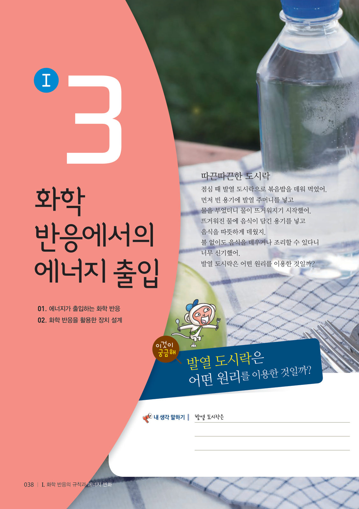
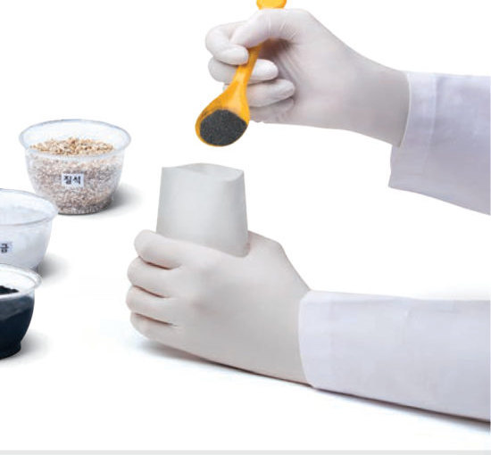
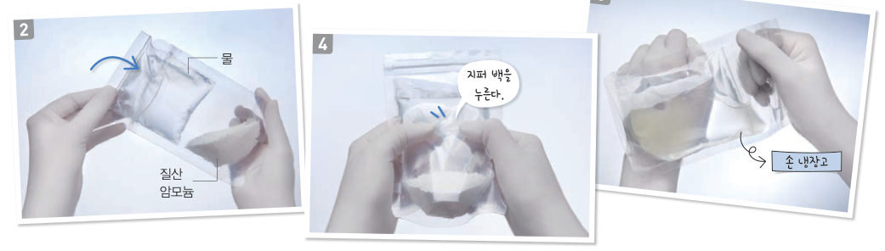
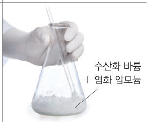

살아있는 교과서 · Ⅰ. 화학 반응의 규칙과 에너지 변화 · 3. 화학 반응에서의 에너지 출입 · 01 38~43쪽
에너지가 출입하는 화학 반응
나무가 탈 때 주변이 왜 따뜻해질까? 가상 온도계로 손난로와 손 냉장고의 온도 변화를 그래프로 그리고, 여러 화학 반응에서 에너지가 들어오고 나가는 방향을 확인해 보자.
🎯 이 단원을 배우면 — 화학 반응이 일어날 때 에너지가 출입함을 설명하고, 화학 반응에서의 에너지 출입을 활용한 예를 찾아 설명할 수 있다.
출발발열 도시락은 어떤 원리를 이용한 것일까? 38~39쪽

38쪽따끈따끈한 도시락
점심 때 발열 도시락으로 볶음밥을 데워 먹었어. 먼저 빈 용기에 발열 주머니를 넣고 물을 부었더니 물이 뜨거워지기 시작했어. 뜨거워진 물에 음식이 담긴 용기를 넣고 음식을 따뜻하게 데웠지. 불 없이도 음식을 데우거나 조리할 수 있다니 너무 신기했어. 발열 도시락은 어떤 원리를 이용한 것일까?
🔑 첫 번째 열쇠 불 없이 음식을 데우거나 조리하는 방법을 화학 반응에서의 에너지 출입과 관련지어 찾아본다. · 두 번째 열쇠 발열 도시락에 이용하는 화학 반응과 발열 도시락의 구조적인 특징을 알아본다.
이 단원과 관련해 이미 알고 있는 것에 표시해 보자.
탐구 수행화학 반응에서 에너지의 출입 확인 40~41쪽
40쪽나무가 탈 때 주변이 왜 따뜻해질까?
수증기가 액화할 때에는 에너지를 방출하고, 물이 기화할 때에는 에너지를 흡수한다. 물질의 상태가 변할 때 에너지가 출입하는 것처럼 화학 반응이 일어날 때에도 에너지가 출입한다. 다음 탐구로 철과 산소의 반응, 질산 암모늄과 물의 반응에서 에너지의 출입을 알아보자.

40쪽Ⓐ 온열 장치(손난로) — 부직포 주머니에 철 가루, 숯가루, 소금, 질석, 물

41쪽Ⓑ 냉각 장치(손 냉장고) — 물이 든 지퍼 백 + 질산 암모늄
Ⓐ 부직포 주머니에 철 가루, 숯가루, 소금, 질석을 한 숟가락씩 넣고 물을 한 숟가락 넣은 뒤 열 봉합기로 밀봉한다. 주머니를 흔들거나 주무른 다음 변화를 확인한다.
Ⓑ 지퍼 백에 물을 1/2 정도 넣고 닫은 뒤, 질산 암모늄을 1/5 정도 넣은 한약용 투명 봉지에 넣고 밀봉한다. 지퍼 백을 눌러 물과 질산 암모늄이 섞이게 한 다음 봉지를 손이나 팔에 대어 본다.
⚠️ 시약이 옷이나 눈, 피부에 닿지 않게 주의하고, 실험을 마치면 남은 물질은 지정된 곳에 모아 처리한다.
가상 온도계주머니 속 온도를 재 보자 (10 분을 20 초로 빨리 보기)
두 주머니를 모두 반응시켜 보세요.
1Ⓐ 손난로를 흔들면 온도가 . 철이 공기 중의 산소와 반응할 때 주변으로 에너지를 하기 때문이다.
2Ⓑ 손 냉장고는 온도가 . 질산 암모늄과 물이 반응할 때 주변으로부터 에너지를 하기 때문이다.
평가 기준
스스로 평가
탐구 기능 화학 반응이 일어날 때 에너지가 출입함을 설명할 수 있는가?
인성 모둠 구성원과 협력하며 활동하였는가?
인성 탐구 활동에 적극적으로 참여하였는가?
🔌 아두이노로 직접 재 보자! 온도 센서 2 개로 손난로와 손 냉장고의 온도 변화를 동시에 기록하는 아두이노 실험 보고서
교과서화학 반응이 일어날 때 에너지는 어떻게 될까? 42쪽
손난로에 들어 있는 철이 공기 중의 산소와 반응할 때 주변으로 에너지를 방출하므로 손난로가 따뜻해진다. 반면, 손 냉장고에 들어 있는 질산 암모늄과 물이 반응할 때 주변으로부터 에너지를 흡수하므로 손 냉장고가 차가워진다. 이와 같이 화학 반응이 일어날 때에는 에너지를 방출하거나 흡수하는데, 에너지를 방출하면 주변의 온도가 높아지고, 에너지를 흡수하면 주변의 온도가 낮아진다.
그림 1-10몇 가지 화학 반응에서의 에너지 출입 — 방출: 나무의 연소, 산화 칼슘 + 물, 염산 + 수산화 나트륨 수용액 / 흡수: 소금 + 물, 수산화 바륨 + 염화 암모늄, 광합성
에너지 화살표반응을 골라 에너지가 어디로 이동하는지 보자
1각 반응에서 에너지를 방출하는지 흡수하는지 고르시오.
⑴ 나무의 연소
⑵ 산화 칼슘과 물의 반응
⑶ 염산과 수산화 나트륨 수용액의 반응
⑷ 소금과 물의 반응
⑸ 수산화 바륨과 염화 암모늄의 반응
⑹ 식물의 광합성
해 보기화학 반응에서의 에너지 출입을 활용한 기구 알아보기 43쪽
우리는 생활에서 화학 반응이 일어날 때 출입하는 에너지를 유용하게 활용한다. 예를 들어 연료가 연소할 때 방출하는 에너지를 활용하여 가정에서 난방을 하거나 음식을 조리한다.
기구
활용하는 화학 반응과 에너지
발열 깔창
철 가루와 산소가 반응할 때 방출하는 에너지로 발을 따뜻하게 한다.
발열 컵
산화 칼슘과 물이 반응할 때 하는 에너지로 음료를 데운다.
냉찜질 주머니
질산 암모늄과 물이 반응할 때 에너지를 하여 차가워진다.
🧩 첫 번째 열쇠 (43쪽)
에너지를 ( )하는 화학 반응을 이용하면 불 없이도 음식을 데우거나 조리할 수 있다.
스스로 확인하기40쪽 학습 목표를 달성했는지 확인해 보자 43쪽
1철과 산소가 반응할 때에는 에너지를 하고, 질산 암모늄과 물이 반응할 때에는 에너지를 한다.
2화학 반응이 일어날 때 에너지를 방출하면 주변의 온도가 .
3과학적 사고력 겨울철 쌓여 있는 눈에 염화 칼슘을 뿌리면 눈이 빨리 녹는다. 눈이 빨리 녹는 까닭을 염화 칼슘과 물의 반응에서의 에너지 출입과 관련지어 설명해 보자.
개념 확인에너지가 출입하는 화학 반응
1화학 반응이 일어날 때에는 에너지를 방출하거나 한다.
2화학 반응에서 에너지를 하면 주변의 온도가 높아지고, 에너지를 하면 주변의 온도가 낮아진다.
ㄱ. 나무의 연소 · ㄴ. 소금과 물의 반응 · ㄷ. 철과 산소의 반응 · ㄹ. 산화 칼슘과 물의 반응 · ㅁ. 수산화 바륨과 염화 암모늄의 반응 · ㅂ. 염산과 수산화 나트륨 수용액의 반응
3⑴ 반응 후 주변의 온도가 높아지는 반응을 모두 고르시오.
4⑵ 반응 후 주변의 온도가 낮아지는 반응을 모두 고르시오.
5손난로는 철과 산소가 반응할 때 에너지를 하여 주변의 온도가 높아지는 것을 활용한 장치이다.

젖은 나무판 위에서 수산화 바륨과 염화 암모늄을 섞은 뒤 삼각 플라스크를 들어 올리면 나무판이 함께 들린다.
✔옳으면 O, 옳지 않으면 X
⑴ 수산화 바륨과 염화 암모늄의 반응은 에너지를 흡수하는 반응이다.
⑵ 나무판 위의 물이 응고될 때 에너지를 방출한다.
⑶ 삼각 플라스크에 산화 칼슘과 물을 넣고 반응하여도 같은 결과가 나타난다.
스스로 정리하기에너지가 출입하는 화학 반응 48쪽
1화학 반응에서의 에너지 출입
⑴ 화학 반응이 일어날 때에는 에너지를 하거나 흡수한다. ⑵ 에너지를 방출하면 주변의 온도가 지고, 에너지를 흡수하면 주변의 온도가 진다. ⑶ 활용: 발열 컵·발열 깔창·손난로(에너지 ), 냉찜질 주머니·손 냉장고(에너지 )
평가 기준
스스로 평가
화학 반응이 일어날 때 에너지가 출입함을 설명할 수 있다.
화학 반응에서의 에너지 출입을 활용한 예를 찾아 설명할 수 있다.
제출학생 정보 · 제출하기
모든 활동을 마친 뒤 제출하면 전체가 한 번에 채점되고 피드백이 나타나요. 답안은 선생님 스프레드시트(중3 탭)에 기록돼요.